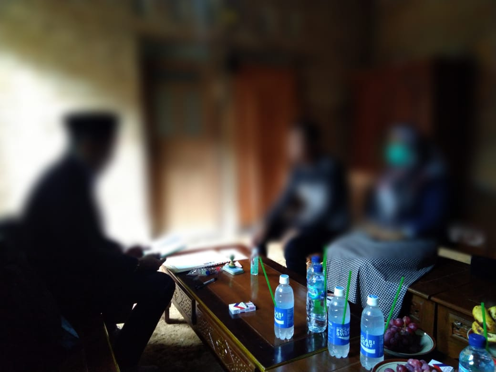

Gallery Foto



Layanan konsultasi dan pendampingan akad nikah sesuai syariat Islam. Kami membantu Anda memahami prosedur, syarat, lokasi, serta biaya nikah siri secara jelas, aman, dan profesional.
Konsultasi SekarangKami menjamin kerahasiaan data setiap pasangan dengan penuh tanggung jawab dan kepercayaan.
Pendampingan dilakukan oleh ustadz dan penghulu berpengalaman sesuai tuntunan syariat Islam.
Akad nikah dapat dilakukan di rumah, tempat pilihan Anda, atau lokasi khusus yang kami sediakan.
"Alhamdulillah, prosesi akad berjalan lancar dan sesuai syariat Islam."
— Ahmad & Siti"Pelayanan sangat profesional, privasi kami benar-benar terjaga dengan baik."
— Rina & Dedi"Terima kasih atas pendampingannya, kini hubungan kami resmi dan halal."
— Putri & FajarKami melayani akad nikah sah secara agama di berbagai kota besar dan kecil di wilayah Jawa Barat, Jawa Tengah, dan Jawa Timur.
Besaran bayaran atau tarif penghulu nikah siri bergantung pada daerah masing-masing. Untuk setiap wilayah, biaya disesuaikan dengan jarak, layanan, dan kebutuhan akad.
Daerah tertentu kami menetapkan kisaran Harga Rp. xxx.xx, Click Untuk Membuka
Bisyāroh tersebut sudah mencakup jasa penghulu nikah, dua orang saksi, tempat akad, serta surat sertifikat nikah yang sah secara agama Islam. Bila penghulu diundang ke lokasi Anda, umumnya akan dikenakan tambahan biaya transportasi ringan.
Hubungi Admin via WhatsApp